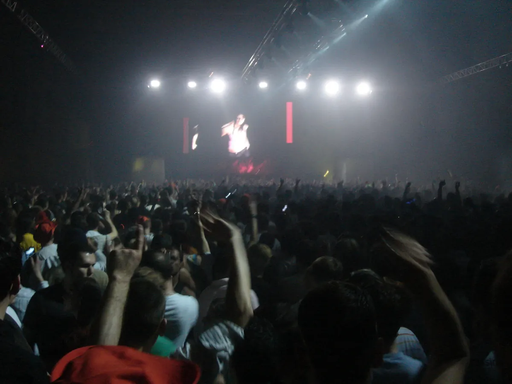
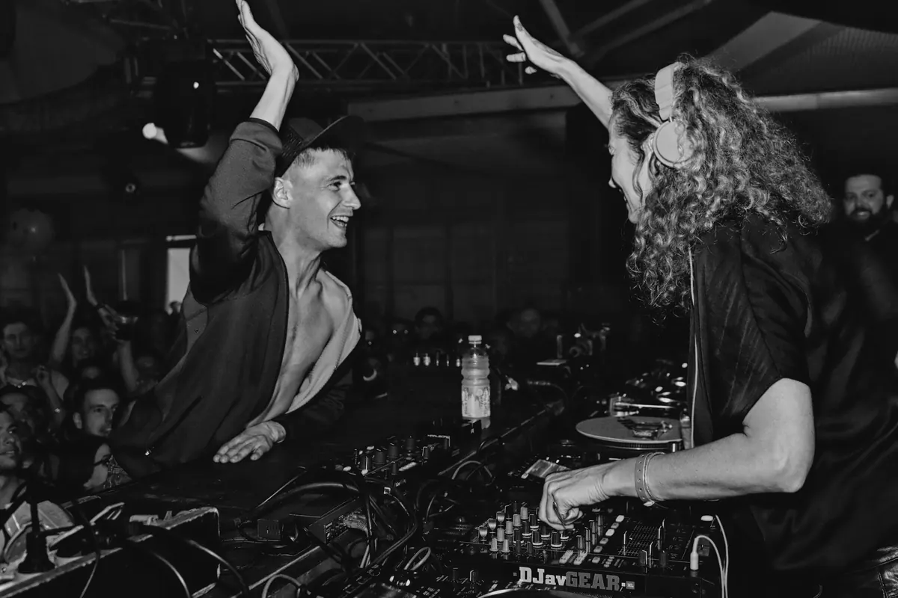
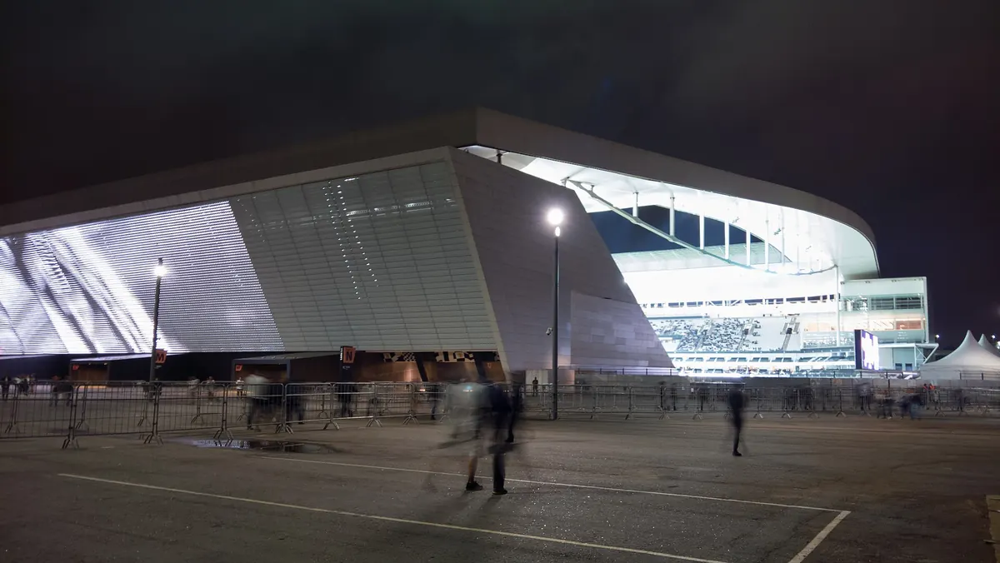

Festival guide, 2027
Time Warp Festival 2027: Mannheim, tickets and line-up
The techno and house festival that began in 1994: when the Mannheim original runs in 2027, which cities host an edition, how tickets work and who plays.
One name, several festivals.
Time Warp is a name that covers more than one event. The original is a long night in a Mannheim exhibition hall, and since then the name has also been put on festivals in São Paulo, New York, Madrid and other cities. That raises practical questions. Which one is next? Where do the tickets go on sale, and what do they cost? Who is playing?
This page answers them from the festival's own site, read on 4 October 2026, and it ends with sets to hear first. Where the site lists no date or no artist, the page says so instead of guessing.
What is Time Warp festival?
Time Warp is an electronic music festival. Its ticket page tells the origin in two sentences: in the mid-90s techno had become music for the masses, and two people in Mannheim wanted a party that revived the spirit of the first years. The first Time Warp is listed in the festival's history on 26 November 1994 at the Walzmühle in Ludwigshafen.

The early editions moved around. The official history lists Mannheim in May 1995, then Berlin, Bremen, Speyer and Sinsheim before the end of the decade, and later editions in Hannover, Werdau, Vienna and Prague. The Time Warp festival has been tied to one venue since April 2000: the Maimarkthalle in Mannheim, which the history lists for every Mannheim edition from then until 2026.
The format has changed with the years. The 2024 edition was billed "30 Years | 30 Hours" and ran over two days, 5 and 6 April. The 2025 and 2026 editions were billed "5 Floors | 19 Hours". The 2027 page says only "multifloor" and "long haul", with a single night and day, so the number of floors is not stated.
For the music itself, see the techno guide. For a festival that books techno only, there is Awakenings.
When is Time Warp 2027?
Time Warp Mannheim 2027 is on Saturday 3 April 2027, from 19:00 to 14:00, which makes 19 hours and an end on Sunday afternoon. The official site gives this date, and its Mannheim page calls it the only German edition in 2027, so there is no autumn Mannheim date to wait for. In 2025 there was one: Time Warp Autumn, on 7 and 8 November 2025, billed "Two Days | Two Stages".
The Time Warp dates for the editions abroad stop in 2026. On 4 October 2026 the official site listed no 2027 date for Mexico, New York, Los Angeles or Brazil, and none for Madrid, so a 2027 date for those is still to be announced.
Where is Time Warp held in Mannheim?
The Time Warp festival Mannheim edition is held at the Maimarkthalle, Xaver-Fuhr-Straße 101, 68163 Mannheim. The festival's own name for it is Time Warp Germany, and Time Warp Mannheim is how most people say it, with the line "The original since 1994".

Time Warp techno is tied to one hall. The official history billed the 2025 and 2026 editions there as "5 Floors". The festival's ticket page says a Mannheim ticket includes free local transport in the VRN area, with one condition: the name on the ticket must match your own.
Which Time Warp editions run outside Mannheim?
The official site lists these Time Warp editions. All dates were read on 4 October 2026.
| Edition | Where | Dates | Status |
|---|---|---|---|
| Time Warp Miami | Factory Town, Miami | 25 April 2026 | Held |
| Time Warp Brasil | Neo Química Arena, São Paulo | 1 and 2 May 2026 | Held |
| TW x EDC Colombia | Atanasio Girardot Sports Complex, Medellín | 10 October 2026 | Upcoming, a Neon Garden stage |
| Time Warp Mexico | Expo Santa Fe, Mexico City | 20 and 21 November 2026 | Upcoming, tickets on sale |
| Time Warp New York | Duggal Greenhouse and Agger Building, New York City | 20 and 21 November 2026 | Upcoming, labelled Save the Date |
| Time Warp Los Angeles | ACE*Mission, Los Angeles | 27 and 28 November 2026 | Upcoming, tickets on sale |
Time Warp NYC is the name many people search for, and the festival itself uses Time Warp New York in 2026 and Time Warp USA in earlier years. The history lists New York editions in 2014, 2015, 2019 and every year from 2021 to 2025, at the 39th Street Pier, the Brooklyn Navy Yard and the Brooklyn Storehouse, and the 2026 edition moves to the Duggal Greenhouse and Agger Building.
The Time Warp Miami edition on 25 April 2026 is the only Miami date in the official history. Time Warp Mexico is listed as a new edition for 2026, and the history shows no earlier Mexico edition apart from a Time Warp stage at EDC Mexico on 20 February 2026. The Time Warp Los Angeles edition is also labelled a new edition for 2026, and the history lists no earlier Los Angeles date.

Time Warp Brazil has São Paulo dates in 2018, 2019, 2022, 2023, 2024, 2025 and 2026. Time Warp Argentina is a past edition: Buenos Aires hosted it at Costa Salguero in 2014, 2015 and 2016, and the history lists nothing after that. The Time Warp Netherlands editions, billed Time Warp Holland, ran in Rotterdam, Amsterdam, 's-Hertogenbosch and Utrecht between 2008 and 2014. Madrid hosted Time Warp Spain at IFEMA in October 2024 and October 2025, and the official site lists no Madrid date after October 2025.
The Time Warp name also appears as a stage at other festivals. The history lists a Neon Garden stage at EDC Las Vegas on 15 May 2026.
How do Time Warp tickets work?
Time Warp tickets for Mannheim are sold through the festival's own ticket shop, tickets.time-warp.de, and they are print-at-home or mobile tickets. On 4 October 2026 the shop showed three passes, each marked "Pre-lineup price" with the service fee included:
- Blue Pass, called Experience: €79.00, including a €6.50 service fee.
- Silver Pass, called Comfort: €169.00, including a €15.00 service fee.
- Gold Pass, called Premium: €229.00, including a €20.00 service fee.
The shop page does not list what each pass includes, so check the shop before you choose. The rules from the festival's ticket page:
- Refunds. The festival does not offer refunds.
- Printing. You do not need to print. A ticket can be scanned from a phone screen.
- Names. The name on the ticket is not checked at the entrance, with an exception when a ticket needs validating. For the free local transport the name must match yours.
- Age. Admission is 18 and over.
Who plays Time Warp?
No artist was announced for Mannheim 2027 on 4 October 2026. The official page promises "a powerful lineup of international pioneers and underground mainstays" without naming anyone, and the ticket shop labels each pass "Pre-lineup price", so check the shop again once the Time Warp lineup is out. This page is updated when the festival announces it.
For a sense of what Mannheim sounds like, the festival's own page carries recap videos of the March 2026 edition. The two shown are Sara Landry and Nina Kraviz. That edition, on 21 March 2026, is the most recent Mannheim date in the official history.
Which Time Warp sets should you hear first?
Start with the Mixmag set by Loco Dice, titled Time Warp 2018. Mixmag also uploaded three sets under the Time Warp US name from The Lab NYC, with Seth Troxler playing soulful deep tech, Monkey Safari house and Thugfucker tech house. They were filmed in a New York studio, not at the festival.
For a set from a festival you have not heard of, the Selector plays a DJ set at random.
Time Warp FAQ.
What is the Time Warp festival?
An electronic music festival that began in Ludwigshafen on 26 November 1994 and is held at the Maimarkthalle in Mannheim, Germany. The name is also used for editions in São Paulo, New York, Mexico City, Los Angeles and other cities.
When is Time Warp 2027?
Saturday 3 April 2027, from 19:00 to 14:00, at the Maimarkthalle in Mannheim, according to the official site. It is described as the only German edition in 2027.
When is Time Warp 2026?
The Mannheim edition was held on 21 March 2026. The Time Warp festival 2026 dates still to come are the Neon Garden stage at EDC Colombia on 10 October, Time Warp Mexico and Time Warp New York on 20 and 21 November, and Time Warp Los Angeles on 27 and 28 November. The next Mannheim edition is on 3 April 2027.
Where is Time Warp held?
The Mannheim edition is at the Maimarkthalle, Xaver-Fuhr-Straße 101, 68163 Mannheim, Germany. The other editions use different venues: Expo Santa Fe in Mexico City, ACE*Mission in Los Angeles and the Duggal Greenhouse in New York in 2026.
How much are Time Warp tickets?
On 4 October 2026 the Mannheim ticket shop showed three pre-lineup prices: €79 for the Blue Pass, €169 for the Silver Pass and €229 for the Gold Pass, with the service fee included.
Can you get a refund on a Time Warp ticket?
No. The festival says it cannot offer refunds, so book only when you are sure you can travel.
What is the age limit for Time Warp?
18 and over for the Mannheim edition.
Is there a Time Warp in New York, Miami or Los Angeles?
Time Warp New York is listed for 20 and 21 November 2026 and Time Warp Los Angeles for 27 and 28 November 2026. The Miami edition was held on 25 April 2026, and no later Miami date is listed.
Sources.
- Mannheim date, hours, venue and age limit, read on 4 October 2026: Time Warp Germany event page.
- Edition dates, 1994 to 2026, read on 4 October 2026: time-warp.de and the history page.
- Pass prices, read on 4 October 2026: the Mannheim ticket shop. Ticket rules and the origin story: time-warp.de/tickets.
Continue reading
Read next.
 Rave spots~10 min read
Rave spots~10 min readBerghain: Panorama Bar, Sound and Residents
Berghain explained: the former power station, Panorama Bar upstairs, Halle am Berghain, the Kantine, and the Ostgut Ton label.
Read article → Rave spots~11 min read
Rave spots~11 min readBest Clubs in NYC: Nightclubs for House and Techno, Then and Now
Nowadays, Basement, Public Records, Good Room and Elsewhere: the best clubs in NYC for house and techno now, and the history from the Loft to Output.
Read article → Rave spots~7 min read
Rave spots~7 min readBest Clubs in Tokyo: WOMB, Contact and the Ban on Dancing
WOMB, Contact, Vent and Circus Tokyo: the best clubs in Tokyo for house, techno and bass music, and the 68-year law against dancing that shaped them.
Read article → Rave spots~6 min read
Rave spots~6 min readBest Clubs in Budapest: A38, Instant-Fogas and Turbina
A38's converted cargo ship, the seven rooms of Instant-Fogas and Turbina's techno nights: the best clubs in Budapest now, and the ruin bars several grew out of.
Read article →